【笔记】信息理论
Chapter 1 信息的度量
Lec 1 随机变量的熵和互信息
1.1 自信息
对于概率空间 $\{X,\mathcal{X},p(x)\}$，事件 $\{X=x_k\}$ 的 自信息 定义为
$$I(x_k)=-\log_ap(x_k)$$
当 $a=2$，为比特（bit）。当 $a=e$，为奈特（nat）。
-
自信息的理解
- 事件发生后对观察者提供的信息量；
- 观察者为确证该事件所需要付出的代价（类比功与能量）；
- 事件的自信息并不代表事件的不确定性，事件本身没有不确定性可言。
例如，$p(x_k)=1$ 时，$I(x_k)=0$：「明天太阳从东边升起。」这句话没有信息量。
1.2 条件自信息、两事件的互信息
-
条件自信息
对于二维随机变量概率空间 $\{(X,Y),\mathcal{X \times Y}, p(x,y)\}$，事件 $\{Y=y_j\}$ 发生的条件下事件 $\{X=x_k\}$ 的 条件自信息 定义为
$$I(x_k|y_j)=-\log p(x_k|y_j)$$
本质是已知 $\{Y=y_j\}$ 发生的情况下，突然 $\{X=x_k\}$ 又发生了，这件事情所提供给观察者的信息量。
-
互信息
概率空间 $\{(X,Y),\mathcal{X \times Y}, p(x,y)\}$，事件 $\{Y=y_j\}$ 与事件 $\{X=x_k\}$ 的 互信息 定义为
$$I(x_k;y_j)=I(x_k)-I(x_k|y_j)= - \log p(x_k) + \log p(x_k|y_j)$$
本质是事件 $\{Y=y_j\}$ 发生后对 $\{X=x_k\}$ 的不确定性的降低。
互信息具有对称性！$I(x_k;y_j)=I(y_j;x_k)$，从定义出发加贝叶斯定理证明即可。
1.3 多事件下的概念拓展
-
联合自信息
概率空间 $\{(X,Y),\mathcal{X \times Y}, p(x,y)\}$，事件 $\{Y=y_j\}$ 与事件 $\{X=x_k\}$ 的 联合自信息 定义为
$$I(x_k,y_j)= - \log p(x_k,y_j)$$
-
条件互信息
给定 $Z=z$ 的条件下，$X=x$ 与 $Y=y$ 之间的条件互信息为（
,优先级大于|）$$I(x;y|z)= - \log p(x|z) + \log p(x|y,z)$$
其含义为 $Z=z$ 发生时，$X=x$ 和 $Y=y$ 相互之间提供的信息量。依然具有对称性。
-
联合互信息
联合事件 $\{Y=y,Z=z\}$ 和事件 $\{X=x\}$ 之间的互信息为
$$I(x;y,z)= - \log p(x) + \log p(x|y,z)$$
其含义为 $\{Y=y,Z=z\}$ 联合提供给 $\{X=x\}$ 的信息量。
-
事件联合互信息的链式法则
$$I(x;y,z)=I(x;y)+I(x;z|y)$$
事件 $\{Y=y,Z=z\}$ 联合提供给 $\{X=x\}$ 的信息量等于【$\{Y=y\}$ 提供给 $\{X=x\}$ 的信息量】加上【$\{Y=y\}$ 已知情况下，$\{Z=z\}$ 提供给 $\{X=x\}$ 的信息量】。
1.4 随机变量的熵
熵的定义即为平均自信息（自信息的期望值）。
$$ H(X)=E[I(X)]=\sum_{x \in \mathcal{X}} p(x) I(x)=-\sum_{x \in \mathcal{X}} p(x) \log p(x) $$
【熵与自信息的区别】熵针对的是随机变量 $X$，自信息针对的是具体事件 $\{X=x\}$。
【例子】对于伯努利分布 $X \sim B(p)$，$H(X) = -p \log p - (1-p) \log (1-p)$。当 $p=0 / 1$ 时，熵为 $0$；当 $p=0.5$ 时，熵取到最大值。
【理解】熵是随机变量不确定性的度量。
1.5 关于熵的衍生概念
-
联合熵
$$ H(X,Y)=E[I(X,Y)]=-\sum_{x \in \mathcal{X}, y \in \mathcal{Y}} p(x,y) \log p(x,y) $$
表达了两个变量的不确定度。
-
条件熵
定义 1：给定 $Y=y$ 条件下，$X$ 的条件熵为
$$H(X|y)=-\sum_{x \in \mathcal{X}} p(x|y) \log p(x|y)$$
注意 $Y=y$ 是已然发生的。
定义 2：随机变量 $X$ 相对于随机变量 $Y$ 的条件熵为
$$H(X|Y) = E[H(X|y)] = -\sum_{y \in \mathcal{Y}} p(y) \sum_{x \in \mathcal{X}} p(x|y) \log p(x|y) = -\sum_{y \in \mathcal{Y}}\sum_{x \in \mathcal{X}} p(x,y) \log p(x|y)$$
当 $X,Y$ 统计独立时，有 $H(X|Y)=H(X)$。
-
随机变量联合熵的链式法则【HD】
$$H(X,Y)=H(X)+H(Y|X)=H(Y)+H(X|Y)$$
Proof:
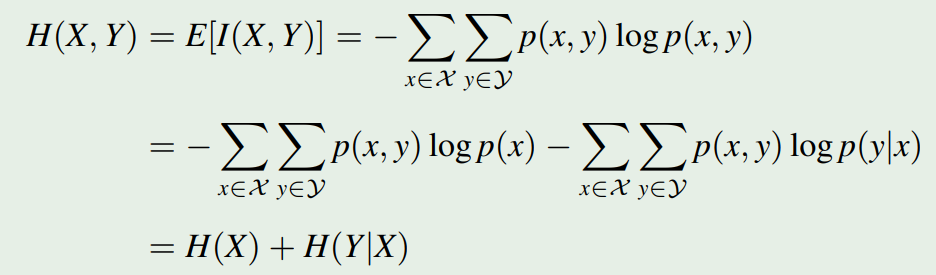
注意到当 $X,Y$ 统计独立时，有 $H(X|Y)=H(X)$。所以当 $X,Y$ 统计独立时，有 $H(X,Y)=H(X)+H(Y)$。
1.6 熵的性质
-
基本性质
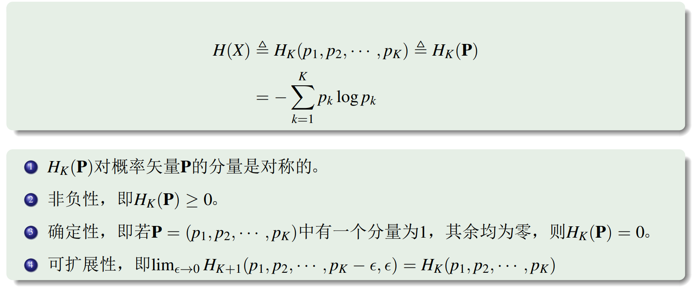
-
可加性（分步观察）
考虑如下的决策树情景：
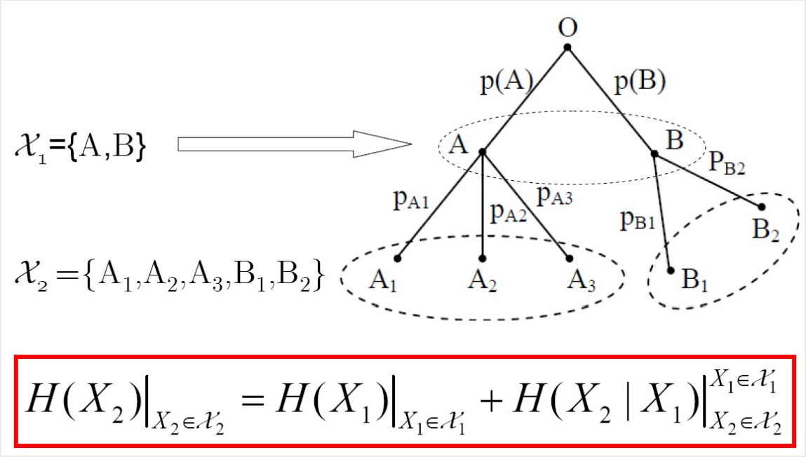
对于变量 $X$（注意本质上只有一个变量）可以进行 多步观察，每一步的观察可以从上一步的观察得到更细致的结果。变量 $X$ 在最后的观察结果集合中的不确定性 等于【第一次观察结果的不确定性】加上【其后每次观察结果在前一次观察结果已知的前提下的前提不确定性】。
和链式法则记得区分！
可加性的证明：
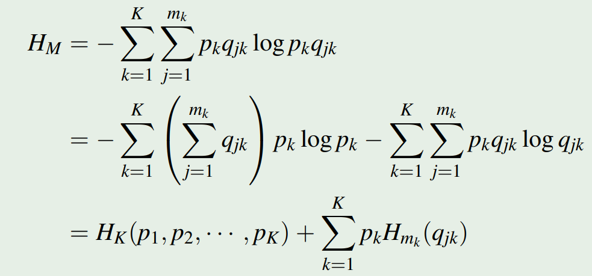
在如此的分步观察下，有
$$H(X_1,X_2)=H(X_2)+H(X_1|X_2)=H(X_2)$$
$$H(X_1,X_2)=H(X_1)+H(X_2|X_1)=H(X_2)$$
注意这个式子只有在上上图所示的决策树情形才适用。
注意第一个式子意味着 $H(X_1|X_2)=0$。回顾上上图，这是因为当 $X_2$ 确定时（例如 $A_2$），$X_1$ 也随之确定（例如 $A$）。所以条件熵为零。反之则没有这个性质。
-
极值性
$$H_K(p_1,p_2,\cdots,p_K) \leq H_K(\frac{1}{K},\frac{1}{K},\cdots,\frac{1}{K}) = \log K$$
极值性的证明：
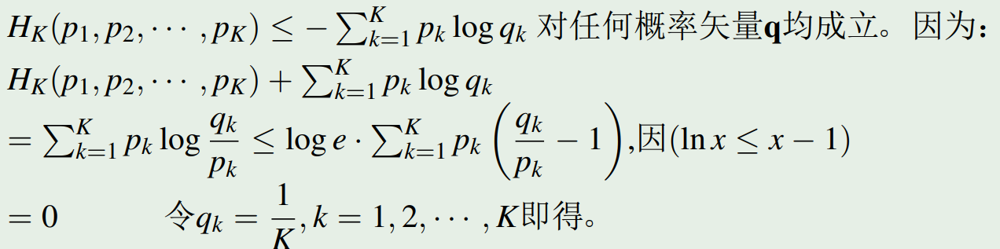
-
条件熵 $\leq$ 熵：增加条件使熵减小
$$H(X|Y) \leq H(X)$$
注意 $Y$ 不是已知的。当 $\{Y=y\}$ 时两者的关系是不确定的。证明如下（第一行用了上一个证明的引理）。
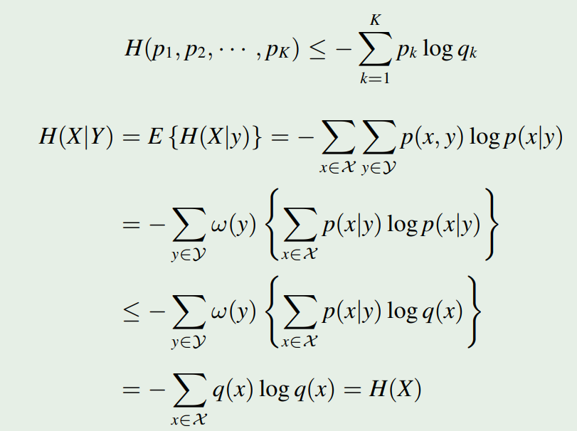
-
凸性
熵具有一个很优美的性质，它是凸的。
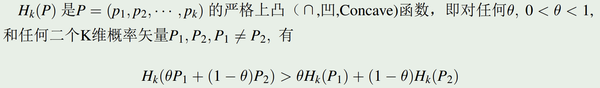
相比于一般的凸函数，概率空间上的函数还要求 $\sum\limits_{i=1}^np_i=1$。根据拉格朗日乘数法，对于概率空间上的上凸函数 $\alpha$，要使 $f(\alpha)$ 取得最大值，则 $f(\alpha)-\lambda(\sum\alpha_i-1)$ 取得最大值。
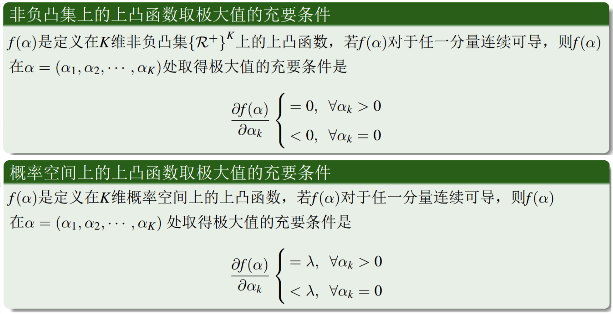
1.7 平均互信息和熵
回顾互信息的概念
$$I(x;y)=I(x)-I(x|y)= - \log p(x) + \log p(x|y) = \log \frac{p(x|y)}{p(x)}$$
平均互信息定义为其期望，即 $I(X;Y)=\sum\limits_x\sum\limits_y p(x,y)\log \frac{p(x|y)}{p(x)}$。
-
平均互信息和熵的关联
注意到
$$I(X;Y)=\sum\limits_x\sum\limits_y p(x,y) \log \frac{p(x|y)}{p(x)}$$
$$I(X;Y)=\sum\limits_x\sum\limits_y p(x,y) \log {p(x|y)} - \sum\limits_x\sum\limits_y p(x,y){p(x)}$$
$$I(X;Y)=H(X)-H(X|Y) \ (I)$$
显然平均互信息具有对称性
$$I(X;Y)=H(Y)-H(Y|X) \ (II)$$
代入联合熵的链式法则，还有
$$I(X;Y)=H(X)+H(Y)-H(X,Y) \ (III)$$
I, II, III 整理一下即可得到下图【IMPORTANT】：
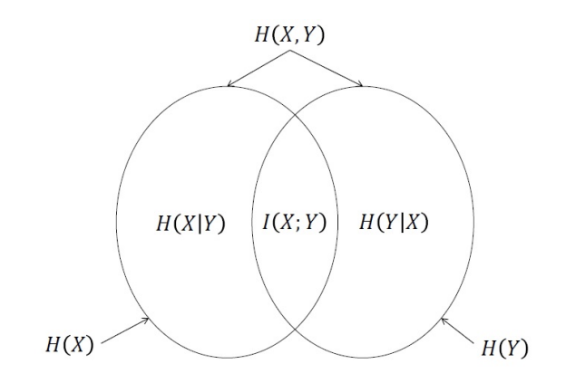
可以证明，平均互信息是 非负的。给定额外的信息，至少不会让熵增加。
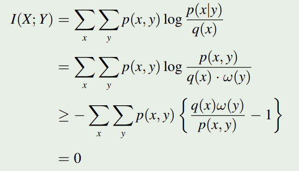
1.8 相对熵（散度）
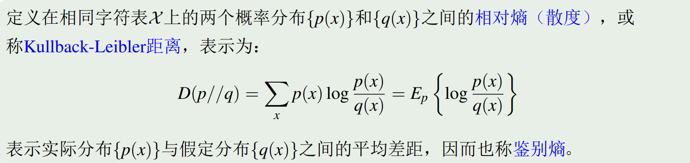
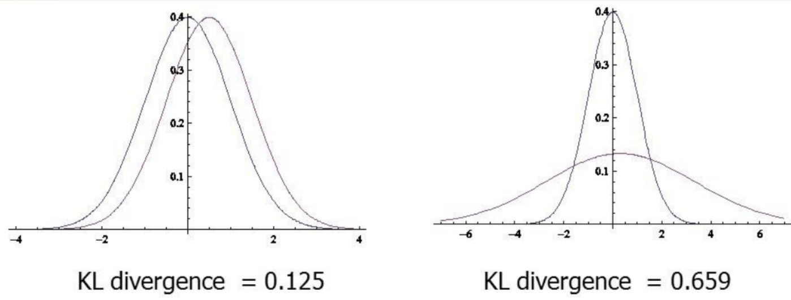
1.9 关于疑义度的 Fano 不等式
定义在相同字符表 $\{0,1,\cdots,K\}$ 上的两个随机变量 $X$ 和 $\hat{X}$，其中 $\hat{X}$ 是对 $X$ 的某种估计。估计错误概率定义为
$$P_E=\sum\limits_{i=0}^{K-1}\sum\limits_{j=0,j \neq i}^{K-1} P \{X=i,\hat{X}=j\}$$
则 $\hat{X}$ 已知条件下 $X$ 的 疑义度 满足表达式
$$H(X|\hat{X})\le H(P_E,1-P_E)+P_E \log (K-1)$$
证明如下：
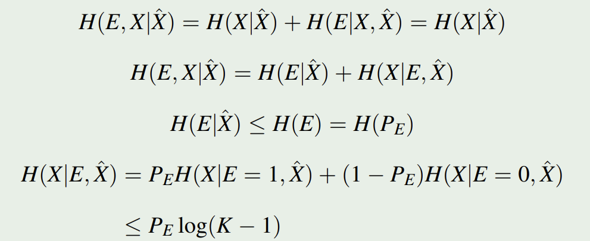
注意其中的 $H(P_E)$ 实际上从定义上就是 $H(E)$ ($E=1$ when $X \neq \hat{X}$)。感觉直接写成 $H(P_E)$ 不是很严谨。
它的物理意义是，如果建立了关于 $X$ 的某种估计 $\hat{X}$，并且已知其错误率 $P_E$，那么我们可以知道这中估计有多可靠（根据 $H(X|\hat{X})$ 判断）。例如，假设 $K=2,P_E=1$，你会发现这个疑义度为 $0$。
1.10 互信息的凸性
smjb，后面再补
Lec 2 连续随机变量的互信息、微分熵
2.1 定义：连续随机变量的互信息
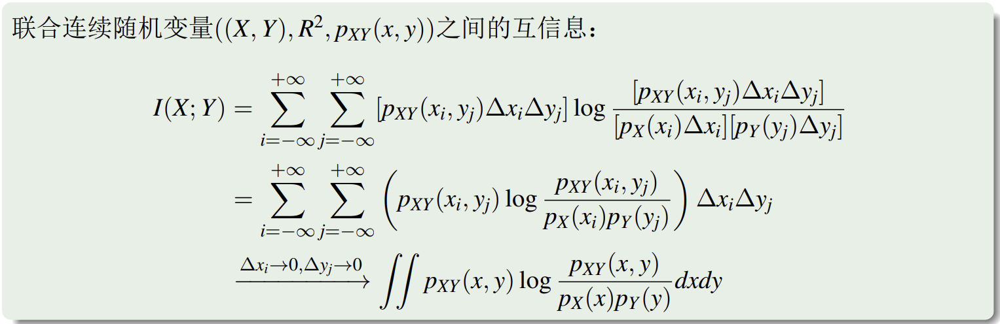
2.2 定义：微分熵
-
基本定义
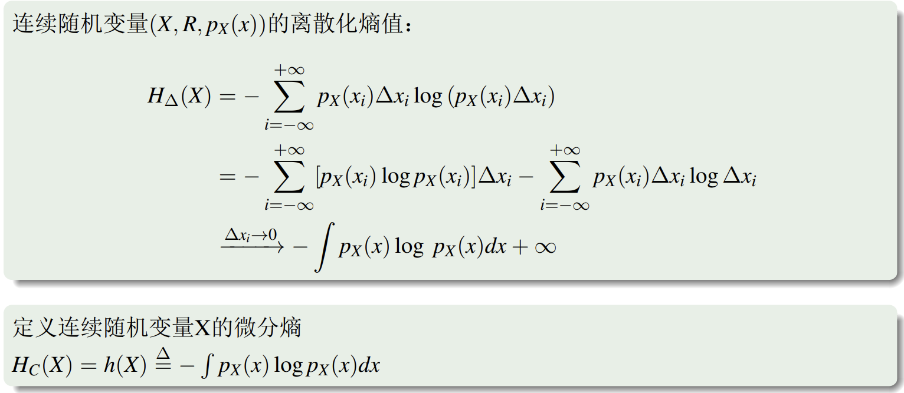
如果按照离散的方法对微分熵进行定义，会发现直接飙到正无穷。
所以采取了上图中下面的那个定义方法，即
$$H_C(X)=h(X) \triangleq-\int p_X(x) \log p_X(x) dx$$
-
条件微分熵、联合微分熵
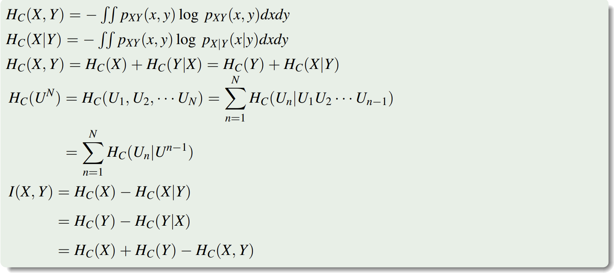
-
一个关于微分熵的例子
已知某线段的长度在 $[0,L]$ 之间均匀分布，现用精度为 $\Delta$ 的尺子去量它，问量得的结果对于线段的真实长度提供多少信息？
令：$X=$ 线段的长度，$Y=$ 测量的结果。
测量前 $H_C(X)=\log L$，测量后 $H_C(X|Y)=\log \Delta$
故而 $I(X;Y)=H_C(X)-H_C(X|Y)=\log\frac{L}{\Delta}$。
2.3 微分熵的性质
-
线性变化下不具有不变性
对于离散随机变量，若存在一一映射 $X \to Y$，则有 $H(X)=H(Y)$。
但对于连续随机变量，即使有一一映射，甚至即使是线性的，这种关系也不存在。
-
均匀分布的微分熵
设 $p(x)=\frac{1}{b-a}, x \in [a,b]$。$H_C(X)=\int_a^b \frac{1}{b-a} \ln (b-a) d x=\ln (b-a)$。
-
微分熵的极大化：峰值受限
设 $X$ 取值于 $(-M,M)$，即 $\int_{-M}^{M}p(x)dx=1$，这时微分熵 $H_C(X) \le \ln 2M$，等号在 均匀分布 时取到。
使用拉格朗日乘数法证明。
$$ \begin{aligned} & J(p(x)) \triangleq H_C(X)-\lambda \int_{-M}^{+M} p(x) d x \newline & =-\int_{-M}^{+M} p(x) \ln p(x) d x-\lambda \int_{-M}^{+M} p(x) d x \newline & =-\int_{-M}^{+M} p(x) \ln \left(e^\lambda p(x)\right) d x \newline & \leq-\int_{-M}^{+M} p(x)\left(1-\frac{1}{e^\lambda p(x)}\right) d x \newline & =\frac{2 M}{e^\lambda}-1=\text { const. } \end{aligned} $$
等号成立的条件为 $p(x)=e^{-\lambda}=\text{const}$，亦即均匀分布。
根据约束条件 $\int_{-M}^{M}p(x)dx=1$ 知 $p(x)=\frac{1}{2M}$，所以 $H_C(X) \le \ln 2M$。
-
微分熵的极大化：平均功率受限
在方差 $\sigma^2$ 一定的条件下，当 $X$ 服从 正态分布 时微分熵最大。即 $H_C(X) \le \ln (\sqrt{2\pi e}\sigma)$。
Lec 3 平稳离散信源的熵
3.1 平稳随机过程
对于 任意 的 $n$，任意的 $t_1, t_2, \cdots, t_n \in T$ 和 $h$，
若 $(X(t_1),X(t_2),\cdots,X(t_n))$ 与 $(X(t_1+h),X(t_2+h),\cdots,X(t_n+h))$ 具有同样的分布，则称随机过程 $\{X(t)\}$ 是平稳随机过程。
-
平稳随机过程的性质
$E(X(t_n))=E(X(t_n+h))=E(X(0))=Const$
对于所有 $t$，$X(t)$ 的均值和方差一致。
值得指出的是，平稳随机并不意味着 $X(t_i)$ 和 $X(t_j)$ 分布是独立的。
3.2 平稳信源
-
平稳信源的定义
类比平稳随机过程，平稳信源意味着任意长度片段的联合概率分布和时间起点无关。即
$$P(X_1,X_2,\cdots,X_L)=P(X_{1+n},X_{2+n},\cdots,X_{L+n})$$
在平稳信源的基础上，有两种条件更为苛刻的信源：
-
$m$ 阶马尔可夫信源
$$P(X_l|X_{l-1},X_{l-2},\cdots,X_0)=P(X_l|X_{l-1},X_{l-2},\cdots,X_{l-m})$$
即，$X_l$ 的分布只会受到 $X_{l-1} \sim X_{l-m}$ 的影响。
当 $m=1$ 时，又称马尔可夫信源。
-
简单无记忆信源
不同时间的随机变量无关。即 $P(X_1,X_2,\cdots,X_L)=\prod_{i=1}^L P(X_i)$。
似乎可以看成 $m=0$ 的马尔可夫信源？
-
-
平稳信源的熵
如果一个平稳信源发出长度为 $n$ 的序列 $X_1,X_2,\cdots,X_n$，记 $n$ 维随机矢量 $X=(X_1,X_2,\cdots,X_n)$，则定义
$$H(X)=H(X_1,X_2,\cdots,X_n)=-\sum p(x_1,x_2,\cdots,x_n) \log p(x_1,x_2,\cdots,x_n)$$
其实就是把熵的定义给搬到了很多元的矢量情况，不过矢量各分量之间有所关联。显然 $H(X)$ 随着 $n$ 的增大而增长，趋向无穷大。
定义以下子概念：
-
平均每符号熵（平均值）：$H_n(X) = \frac{1}{n}H(X) = \frac{1}{n}H(X_1,X_2,\cdots,X_n)$
-
熵速率：$H_\infty(X) = \lim\limits_{n \to \infty} H_n(X)$
-
平均条件熵：$H(X_n|X_{n-1},X_{n-2}, \cdots, X_1)$
-
-
平稳信源熵的性质 （以下性质不需要求信源满足无记忆 / 马尔可夫）
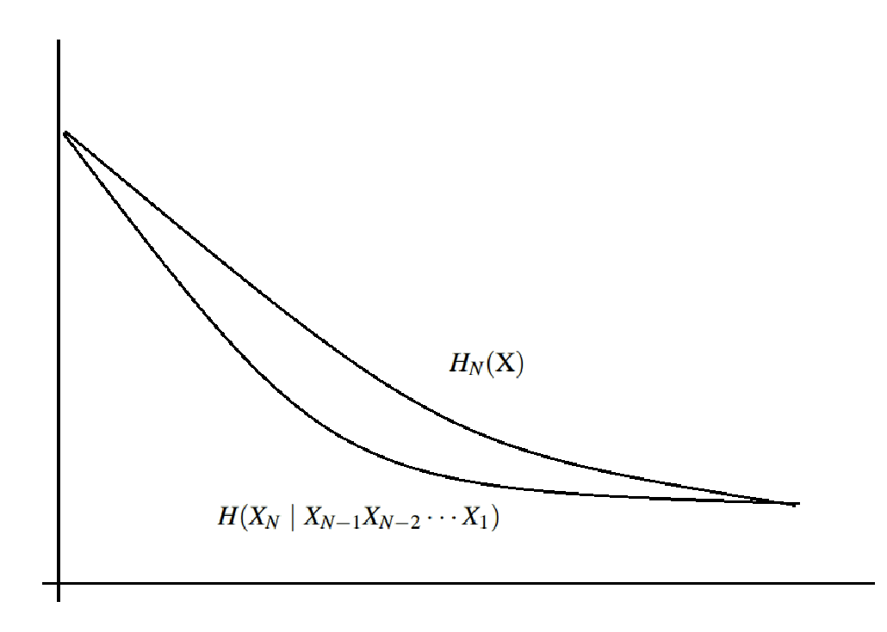
-
平均条件熵 $H(X_n|X_{n-1},X_{n-2}, \cdots, X_1)$ 非严格递减
-
平均每符号熵 $H_n(X)$ 非严格递减
-
$H_n(X) \ge H(X_n|X_{n-1},X_{n-2}, \cdots, X_1)$
-
$H_\infty(X) = \lim\limits_{n \to \infty} H_n(X) = \lim\limits_{n \to \infty} H(X_n|X_{n-1},X_{n-2}, \cdots, X_1)$
考虑证明 1, 2, 3。
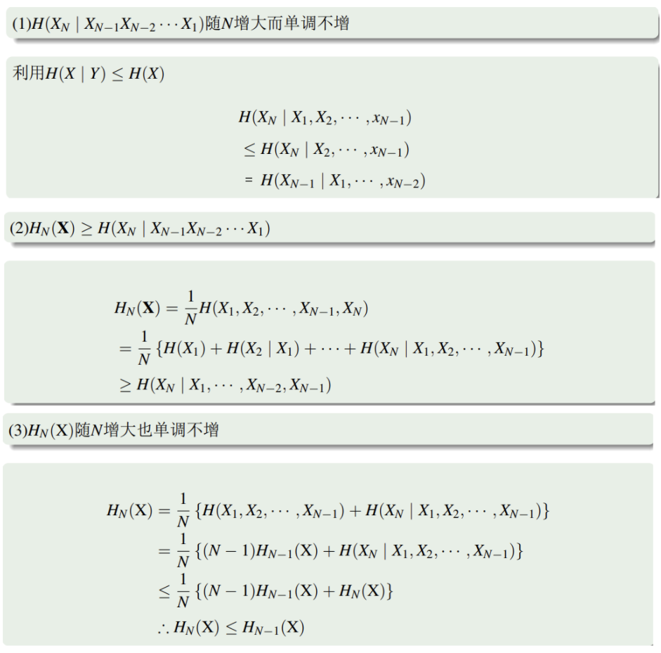
-
3.3 熵速率及其应用
回顾熵速率的定义， $$ \begin{aligned} H_\infty(X) & = \lim\limits_{n \to \infty} H_n(X)= \lim\limits_{n \to \infty} H(X_n|X_{n-1},X_{n-2}, \cdots, X_1) \newline & \leq H(X_N \mid X_{N-1} X_{N-2} \cdots X_2 X_1) \newline & \leq \cdots \leq H(X_2 \mid X_1) \leq H(X_2) \leq \log K \end{aligned} $$
可以看到，熵速率 $H_\infty(X) = \lim\limits_{n \to \infty} H_n(X)$ 基本是小于单字符的熵值 $\log K$ 的。据此，我们定义
-
熵的相对率 $\eta=\frac{H_\infty(X)}{\log K}$，显然 $\eta \leq 1$。
-
信源冗余度 $R = 1 - \eta$。
熵速率的例子：
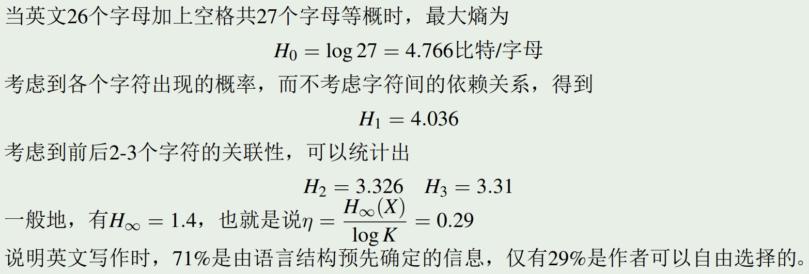
3.4 马尔可夫信源
回顾定义：$m$ 阶的马尔可夫信源：$P(X_l|X_{l-1},X_{l-2},\cdots,X_0)=P(X_l|X_{l-1},X_{l-2},\cdots,X_{l-m})$。
马尔可夫信源具有一个有限的状态空间，可表示为 $x^m = x_{i_{l-1}}x_{i_{l-2}} \cdots x_{i_{l-m}} \in \mathcal{X}^m$，而其大小 $|\mathcal{X}^m|=K^m$。
-
马尔可夫信源计算熵速率
熵速率是趋于无限时的平均熵，而这个无限一般是很难处理的。
不过当信源满足马尔科夫的性质时，我们可以只关心那 $K^m$ 个状态来模拟无穷时的情况。
例如，考虑这样一个二元一阶马尔可夫平稳信源的场景：
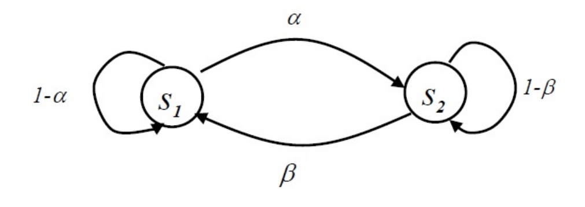
我们可以这样地计算其熵速率 $H_\infty$：
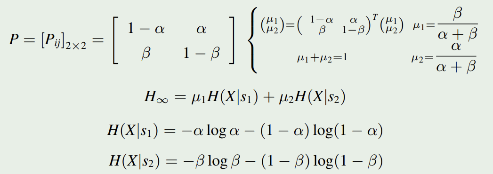
其中 $\mu_1$ 和 $\mu_2$ 可以利用马尔科夫链的稳态来算出。
Chapter 2 信息的无损压缩
接下来进入编码部分。
-
信息传输模型
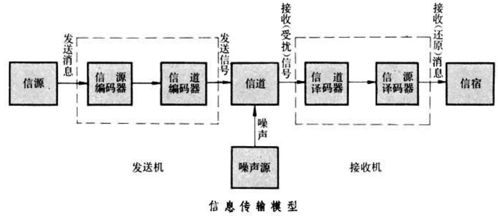
-
我们关心的编码问题是
-
构成描述信源的模型：随机变量序列或随机过程；
-
计算信源输出的信息量，或者说信源的熵。
-
-
信源编码的目标：在代价最小的意义上来最有效地表示一个信源
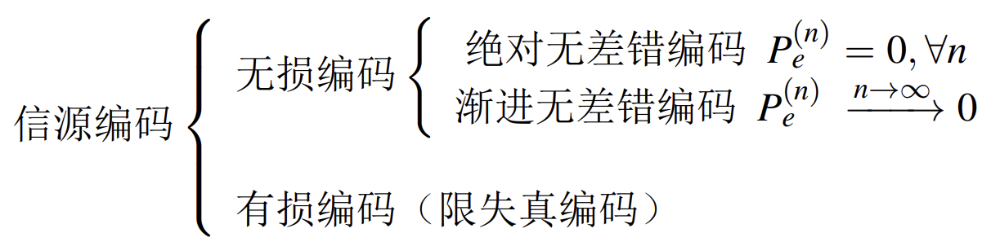
Lec 4 等长编码
4.1 引入：离散无记忆信源 (DMS) 的编码
考虑字符表 $\mathcal{A} = \{a_1,a_2,\cdots,a_K\}$，其概率分布 $\mathcal{P} = \{p_1,p_2,\cdots,p_K\}$。现在输出长度为 $L$ 的消息序列 $u^L=\{u_1,u_2,\cdots,u_L\}$，而我们需要对其进行编码。
考虑这样一种编码：编码字符表 $\mathcal{B} = \{b_1,b_2,\cdots,b_D\}$，编码长度为 $N$。显然，要实现无损编码，必须有（若无说明，接下来默认底数为 2）
$$D^N \ge K^L \ (N \ge \frac{L \log K}{\log D})$$
举例：$\mathcal{A} = \{0,1,2,3,\cdots,9\}, L=2$。等概。若编码字符表 $\mathcal{B}=\{0,1\}$，则 $N \ge 2 \log 10 \ge 7$。每个字符平均要 3.5 bit。
4.2 香农编码定理
仍旧考虑 离散无记忆信源。
我们回顾上式 $N \ge \frac{L \log K}{\log D}$。回忆熵的概念，记 $H(U)$ 是消息序列中单元素的熵，有 $H(U) \le \log K$。
一个自然的想法是：我们是否能做到 $N = \frac{LH(U)}{\log D}$ 呢？
-
香农编码定理
当 $N > \frac{L(H(U)+\epsilon_L)}{\log D}$ 时，可以实现无损编码；
当 $N < \frac{L(H(U)-\epsilon_L)}{\log D}$ 时，不存在无损编码。
-
香农编码定理的理解
此处的「无损编码」指的是信源编码的错误概率可以 任意小，但不一定等于零。当 $L \to + \infty$ 时，上述定理才能得以体现，也才能实现香农编码。
我们可以追加定义 编码速率：$R=\frac{N}{L} \log D$。香农编码定理指出，当消息序列长度 $L \to + \infty$ 时，存在某种编码，使得 $R \to H(U)$。
-
香农编码定理的证明
-
渐进等分性质
对于某个长度为 $L$ 的输出序列 $u^L=\{u_1,u_2,\cdots,u_L\}$，其发生概率 $p(u^L)=\Pi_{i=1}^L p(u_i)$。
同时，这个已知序列带来的 自信息 为 $I(u^L)=-\log p(u^L) = \sum_{i=1}^L I(u_i)$。
定义随机变量 $I_L=\frac{1}{L}\sum_{i=1}^L I(u_i)$，其意义为输出序列的自信息对于单个元素的均值。
根据概统相关知识，我们有
$$E(I_L)=E\{I(u)\}=H(U)$$
$$D(I_L)=\frac{1}{L}D\{I(u)\}=\frac{\sigma_I^2}{L}$$
这里 $\sigma_I^2$ 是人为定义的，表示单个元素信息量的方差。再次强调，$H(U)$ 表示单元素的熵。
根据 切比雪夫不等式，$P\{|\xi-E(\xi)|>\epsilon\} \leq \frac{\operatorname{Var}(\xi)}{\epsilon^2}$。这里 $\epsilon$ 是人为指定的。
代入得到 $P\{|I_L-H(U)|>\epsilon\} \leq \frac{\sigma_I^2}{L\epsilon^2}$。
给定 $\epsilon$，当 $L$ 充分大，有 $\frac{\sigma_I^2}{L\epsilon^2} < \epsilon$。
所以，当 $L$ 足够大时，我们有
$$P\{|I_L-H(U)|>\epsilon\} \leq \epsilon$$
或
$$P\{|I_L-H(U)|<\epsilon\} \geq 1 - \epsilon$$
直观的理解是，当 $L$ 充分大时，$I_L$ 会逼近 $H(U)$。
-
典型列
令 $H(U)$ 为一个 DMS $\{ U,p(\cdot) \}$ 的熵，$\epsilon$ 为任意正数。称
$$A_\epsilon^{(L)}(U)= \left \{u^L: \left | -\frac{1}{L} \log p \left(u^L \right) - H(U) \right| < \epsilon \right \} = \left \{ u^L : \left |I_L-H(U) \right | < \epsilon \right \}$$
为给定 DMS 输出长度为 $L$ 的 $\epsilon$ 典型列集合。其中 $u^L\in U^L$。
典型列具有以下性质：
【A - 渐进等分】
当 $L$ 足够大时，$P\{ u^L \in A_\epsilon^{(L)}(U) \} \geq 1 - \epsilon$。
【B - 数目计算】
前提结论，根据 $A_\epsilon^{(L)}(U)$ 的定义可以得出：
$$2^{-L(H(U)+\epsilon)} \leq p\left(u^L\right) \leq 2^{-L(H(U)-\epsilon)}, \text { if } u^L \in A_\epsilon^{(L)}(U)$$
进而可以推得：
$$(1-\epsilon) 2^{L(H(U)-\epsilon)} \leq\left|A_\epsilon^{(L)}(U)\right| \leq 2^{L(H(U)+\epsilon)}$$
左侧是因为 $$ 1 \geq \sum_{u^L \in A_\epsilon^{(L)}(U)} p\left(u^L\right) \geq \sum_{u^L \in A_\epsilon^{(L)}(U)} 2^{-L(H(U)+\epsilon)} =\left|A_\epsilon^{(L)}(U)\right| \cdot 2^{-L(H(U)+\epsilon)}$$
所以 $$\left|A_\epsilon^{(L)}(U)\right| \leq 2^{L(H(U)+\epsilon)}$$
右侧因为
$$ 1-\epsilon \leq \sum_{u^L \in A_\epsilon^{(L)}(U)} p\left(u^L\right) \leq \sum_{u^L \in A_\epsilon^{(L)}(U)} 2^{-L(H(U)-\epsilon)} =\left|A_\epsilon^{(L)}(U)\right| \cdot 2^{-L(H(U)-\epsilon)} $$
所以 $$\left|A_\epsilon^{(L)}(U)\right| \geq(1-\epsilon) 2^{L(H(U)-\epsilon)} $$
-
最终推导
回到我们的香农编码定理。其基本思想其实就是证明，当 $L \to +\infty$ 时，典型列基本占领了全部的 DMS，所以我们只需要对典型列进行编码（丢弃少数保大多数）。具体地：
由于典型列的数目 $\left|A_\epsilon^{(L)}(U)\right| \leq 2^{L(H(U)+\epsilon)}$，所以当 $N > \frac{L(H(U)+\epsilon_L)}{\log D}$ 时，我们一定有方法对所有典型列进行等长编码（像 $D^N \ge K^L$ 那样），而对所有的非典型列用统一的一个序列编码（例如全 D），当接收端接收到全 D 时，直接认为编码错误。
此时错误概率即为 $p_e=p\left\{\hat{u}^L \neq u^L\right\}=p\left\{u^L \notin A_\epsilon^{(L)}(U)\right\}<\epsilon$。由于当 $L \to +\infty$ 时，$\epsilon$ 也可以取得更小（见渐进等分）。所以我们有 $p_e = \epsilon \to 0 \ (L \to +\infty)$ —— 也就是先前所说的「渐进无差错编码」。
逆定理的证明略去，基本思路就是使用 2B 中的另一侧结论。
-
Lec 5 不等长编码
5.1 引入：不等长编码的优势
考虑 DMS $\{a_1,a_2,a_3\}$，概率密度为 $\{0.5,0.25,0.25\}$，$H(U)=1.5$。
-
若用等长编码，在 $L \to \infty$ 时才能达到最佳编码的效率（香农编码定理）。
-
若用不等长编码，用 $ \{ 1,00,01\}$ 分别编码 $\{a_1,a_2,a_3\}$，编码速率 $1.5$ bit。和 $L$ 的长度无关。
不等长编码依然符合香农编码定理。
5.2 Intro: 不等长编码
若无说明，$K$：消息集（字符集）大小；$L$：消息长度；$D$：编码集大小（一般为 2）；$n_1 \sim n_K$：单个字符编码后的长度，注意不是总长度。

【唯一可译】 由于长度不确定，各字符之间没有「分隔符」。所以我们需要关注某段信息是否具有二义性。例如，假设有一个不唯一可译的编码 $\mathcal{B}$，其消息 $\{1001010\}$ 可能被译为 $\{100,1010\}$ 或 $\{1001,010\}$。
形式化地讲，需要满足 非奇异性 和 可拓展性。假设编码方法可以视作函数 $\phi(x)$，其中 $x$ 是一个原始字符。非奇异性要求 $\phi(x) \neq \phi(y) \ (x \neq y)$；可扩展性要求 $\phi(x^{L_1}) \neq \phi(y^{L_2})$。
【即时可译】 接收端接收到一段消息时的中途，可能暂时还无法确定这个前缀的意义。这会产生「译码延时」。
注意：「即时可译」是建立在「唯一可译」的基础上的。
-
唯一可译的判据：Sardinas & Petterson 判据
考虑如下的算法：设编码集为 $c$（在 5.1 中 $c=\{1,00,01\}$）。
-
初始化：令 $S_0=c$。
-
迭代：用以下两种方法对 $S_0$ 进行迭代。大概就是枚举码字集 $c$，然后和 $S_{i-1}$ 进行前缀匹配 / 反前缀匹配得到 $S_i$。

-
判断：若存在 $S_i$ 使得 $S_i \cap S_0 \neq \varnothing$，则不具有唯一可译性质。并且：
若 $S_1 = \varnothing$，则该码唯一可译且即时可译。此时，一个码中没有码字是其它码字的前缀，称该码为 异字头码。
若 $S_n = \varnothing \ (n>1)$，则该码唯一可译且译码延时有限。
来看一个例子：

对于 Sardinas & Petterson 判据，一个 subcase 的感性证明是：

-
-
即时可译的 存在性 判据：Kraft 不等式
Kraft 不等式：存在长度为 $n_1,n_2,\cdots,n_K$ 的 $D$ 元异字头码的充要条件是
$$\sum\limits_{k=1}^KD^{-n_k}\le 1$$
注意这里只给定了长度，没有给定具体的编码方式。
首先，对于异字头码，若将其用树形表示，那么所有码字只出现在叶子上（一个码中没有码字是其它码字的前缀）。

不等式证明如下（注意证明里砍的是叶节点而不是全部子树节点）：

-
唯一可译码一定满足 Kraft 不等式
证明：假设一个唯一可译码共对一共 $K$ 种消息进行译码，$x_i$ 被译为 $C(x_i) (1 \le i \le K)$。
考虑
$$\begin{aligned} \left(\sum_{k=1}^K D^{-n_k}\right)^r & =\left(\sum_{k_1=1}^K D^{-n_{k_1}}\right)\left(\sum_{k_2=1}^K D^{-n_{k_2}}\right) \cdots\left(\sum_{k_r=1}^K D^{-n_{k_r}}\right) \newline & =\sum_{k_1=1}^K \sum_{k_2=1}^K \cdots \sum_{k_r=1}^K D^{-\left(n_{k_1}+n_{k_2}+\cdots+n_{k_r}\right)} \newline & =\sum_{i=1}^{rn_{\max}} A_i D^{-i} \end{aligned} $$
其中 $A_i$ 是一种抽象的系数表示。细品上面的式子，会发现等式左侧的数学意义恰为【所有长度为 $r$ 的可能的原始消息】的多项式展开；那么对应地，$A_i$ 的意义则是所有长度为 $i$ 的【编码后消息】数目。由于唯一可译码的「可拓展性」，所以一定有 $A_i \le D^i$（若 $A_i > D^i$，根据抽屉原理，一定存在两个不同的原始消息，它们映射到了同一个编码后消息上）。
所以
$$ \sum_{k=1}^K D^{-n_k} \leq \left ( \sum_{i=1}^{rn_{\max}} 1 \right)^{\frac{1}{r}} = (rn_{\max})^{\frac{1}{r}}=e^{\frac{1}{r}\ln (rn_{\max})} $$
当 $r \to \infty$，有 $\frac{1}{r}\ln r \to 0$，即上式在 $r \to \infty$ 时小于等于 $1$。
根据这一性质，对于任意的「唯一可译码」，一定存在一个同样编码长度的「异字头码」。这说明，如果一种码字方法唯一可译但是不即时可译，它总能够被优化！
-
不等长编码定理
任何一个唯一可译码的平均码字长度必须满足 $\overline{n} \ge \frac{H(U)}{\log D}$，同时一定存在一个 $D$ 元唯一可译码，其平均长度满足 $\overline{n} \le \frac{H(U)}{\log D} + 1$。

5.3 Huffman 编码
基本思路：对于概率分布
$$ U \sim\left(\begin{array}{ccccc}a_1 & a_2 & \cdots & a_{K-1} & a_K \newline p_1 & \geq p_2 & \cdots & \geq p_{K-1} & \geq p_K\end{array}\right)$$
每次找 $p$ 最小的两个符号 $a_{K-1}, a_K$，赋予其 LSB 以 $0$ 和 $1$，然后将其合并。不断迭代此过程，直至概率分布集合中只剩下一个符号。例如

-
Huffman 编码正确性理解
- 对于给定信源，存在最佳唯一可译码（二元码），其最小概率的两个消息对应的码字等长，且长度最长，同时这两个码字的最后一位码元取值不同。
证明略去。
- 对辅助源 $U’$ 的最佳编码也是对原始源 $U$ 的最佳编码。
-
D 元 Huffman 编码
和二元的情形基本一致。
唯一的区别是，若 $K=(D-1)i+1$，则每次均有 $D$ 个消息要合并，短标号充分利用；若 $K=(D-1)i+M$，则需要在最开始提前增补 $D-M$ 个概率为零的虚拟消息，使得短标号得到充分利用。一个例子如下。

5.4 Shannon 编码
Shannon 编码并非最优，但它可以在一开始确定所有符号的码长，同时它也满足前缀码的性质。对于
$$ U \sim\left(\begin{array}{ccccc}a_1 & a_2 & \cdots & a_{K-1} & a_K \newline p_1 & \geq p_2 & \cdots & \geq p_{K-1} & \geq p_K\end{array}\right)$$
记 $P_k=\sum\limits_{i=1}^{k-1}p_i \ (P_1=0)$，$P_k=0.c_1c_2\cdots c_{l_k}\cdots$（二进制展开）。其中 $l_k=\lceil \log \frac{1}{p_k} \rceil$
那么 $a_k$ 的 Shannon 码字即为 $c_1c_2\cdots c_{l_k}$。
举例（码字行是 Shannon 编码）：

-
Shannon 码为前缀码的证明
引理：如果把长度为 $l$ 的二进制码字 $z＝z_1z_2\cdots z_l$ 与一个区间
$$(0.z_1z_2\cdots z_l,0.z_1z_2\cdots z_l+\frac{1}{2^l}]$$
对应，则一个码是前缀码就等价于这些码字所对应的区间彼此不相交。证明略去。
回到原命题，那么

这表明 Shannon 码为前缀码。
5.5 Fano 编码